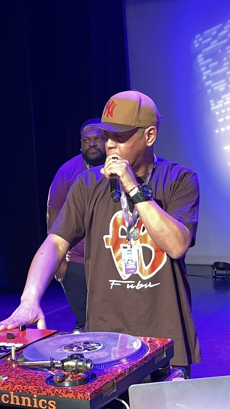
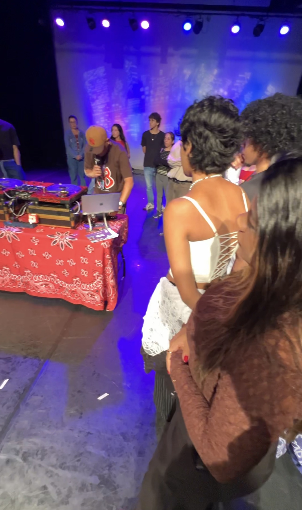

Aula prática com equipamentos profissionais.
O curso de DJ apresenta aos alunos os fundamentos da mixagem musical, criatividade sonora e utilização de equipamentos profissionais.
Durante as aulas práticas os estudantes aprendem técnicas de transição, montagem de playlists e interação musical para eventos.

Aula prática com equipamentos profissionais.

Atividades de mixagem e criatividade sonora.